3.2 Equilibrium of a rigid body
Further Mechanics · moments · couples · rigid bodies · equilibrium
考生需要能够：
- 使用 rigid body model，理解刚体有大小和形状但不发生形变；
- 求力关于一点的 moment，并正确使用 perpendicular distance；
- 判断 clockwise 与 anticlockwise moment 的正负号；
- 使用 resultant force 和 resultant moment 同时为零的 equilibrium 条件；
- 处理 couples、平行力、hinge、support、string、smooth contact 和 rough contact；
- 对 rod、ladder、beam、sign、lamina 等刚体列出水平、竖直和力矩方程；
- 处理 centre of mass 的投影、tipping 和 limiting equilibrium。
学习路线
1. 教材知识点
1.1 Rigid body model
在 particle model 中，物体的大小、形状和力的作用点通常不重要；但当力会使物体转动时，必须使用 rigid body model。刚体有大小和形状，并假设在力的作用下不发生形变。
1.2 Moment of a force
力 F 关于点 O 的 moment 定义为
\boxed{M=Fd},
其中 d 是点 O 到 force line of action 的 perpendicular distance。单位是 \mathrm{N\,m}。
本页面采用：
- anticlockwise moment 为正；
- clockwise moment 为负；
- force 的作用线通过取矩点时，moment 为零。
若力 F 作用在距离 a 的点上，且 force 与 rod 的夹角为 \alpha，则
\boxed{M=Fa\sin\alpha}.
1.3 Equilibrium conditions
刚体处于 equilibrium 时，必须同时满足：
\boxed{\sum F_x=0}, \qquad \boxed{\sum F_y=0}, \qquad \boxed{\sum M_O=0}.
Moment 可以关于任意一点取；只要刚体平衡，关于任何一点的 total moment 都为零。实际计算时，优先选择未知力作用线通过的点，这样该力的 moment 可以直接消失。
1.4 Couples
一对大小相等、方向相反、作用线不同的平行力，其 resultant force 为零，但 total moment 不为零。这种系统称为 couple。
若两条作用线之间的 perpendicular distance 为 d，每个力的 magnitude 为 F，则 couple 的 moment magnitude 为
\boxed{M=Fd}.
Couple 的 moment 关于任意取矩点都相同。
1.5 Contact forces and limiting equilibrium
- smooth contact 只能提供 normal reaction；
- rough contact 可以提供 normal reaction 和 friction；
- 若 friction 达到极限，则
\boxed{F=\mu R},
其中 R 是 normal reaction，\mu 是 coefficient of friction。
“about to slip” 或 “limiting equilibrium” 表示已经使用 F=\mu R，不能只写 F\le\mu R。
1.6 Centre of mass and tipping
均匀物体的 weight 作用在其 geometric centre。若物体放在 supporting edge 上，保持 equilibrium 的条件是 centre of mass 的竖直投影落在支撑区域内。
在 point of tipping 时，centre of mass 的竖直投影通过支撑边缘；这时可以关于该边缘取 moments，normal reaction 的 moment 为零。
2. Textbook Examples
Example 2.1
Two children are playing with a door. Kerry tries to open it by pulling on the handle with a force of 50\,\mathrm N at right angles to the plane of the door, at a distance 0.8\,\mathrm m from the hinges. Peter pushes at a point 0.6\,\mathrm m from the hinges, also at right angles to the door and with sufficient force just to stop Kerry opening it.
(i) What is the moment of Kerry’s force about the hinges?
(ii) With what force does Peter push?
(iii) Describe the resultant force on the hinges.
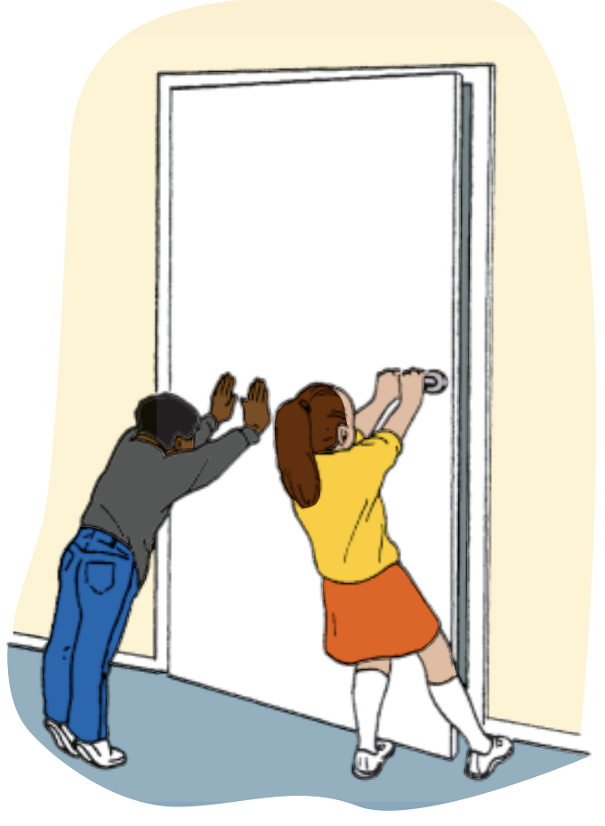
Show answer
Take anticlockwise moments as positive. Kerry’s force produces a clockwise moment:
M_K=-50(0.8)=-40\,\mathrm{N\,m}.
(i) Therefore the moment of Kerry’s force about the hinges is
\boxed{-40\,\mathrm{N\,m}}.
(ii) For rotational equilibrium,
0.6F-40=0 \quad\Longrightarrow\quad F=\frac{40}{0.6}=\boxed{66.7\,\mathrm N}.
(iii) The resultant force must also be zero. If R is the hinge force,
R+50-66.7=0 \quad\Longrightarrow\quad R=\boxed{16.7\,\mathrm N}.
It acts in the same direction as Kerry’s pull.Example 2.2
The diagram shows a man of weight 600\,\mathrm N standing on a footbridge that consists of a uniform wooden plank just over 2\,\mathrm m long, of weight 200\,\mathrm N. Find the reaction forces exerted on each end of the plank.
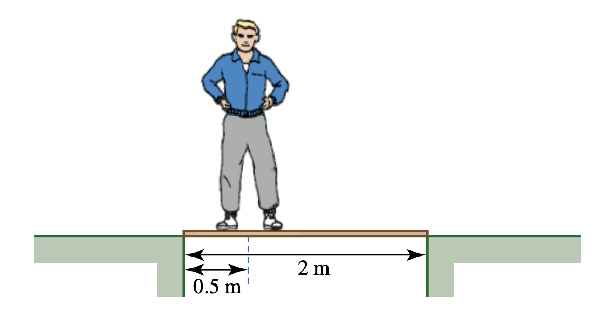
Show answer
Let the upward reactions at A and B be R and S respectively. The weight of the uniform plank acts at its centre.
Vertical equilibrium gives
R+S-600-200=0.
Taking moments about A:
2S-600(0.5)-200(1)=0.
Hence
S=250\,\mathrm N, \qquad R=800-250=\boxed{550\,\mathrm N}.
The reaction forces are \boxed{250\,\mathrm N} at A and \boxed{550\,\mathrm N} at B.Example 2.3
Describe the single force equivalent to P and Q in each of these cases. In each case state its magnitude and line of action.
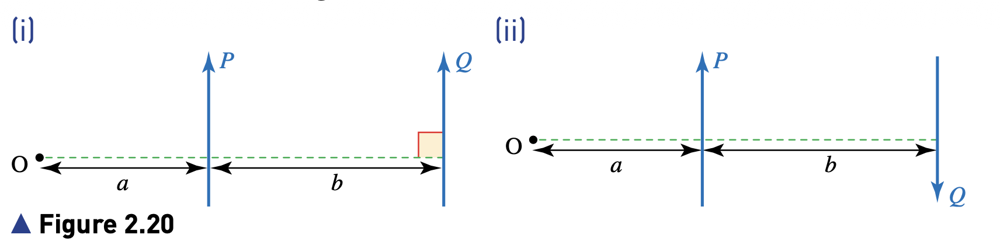
Show answer
(i) The resultant magnitude is P+Q. If its line of action is distance x from O, then
x(P+Q)=Pa+Q(a+b).
Therefore the equivalent force is upward, with magnitude
\boxed{P+Q}
and line of action
\boxed{x=\frac{Pa+Q(a+b)}{P+Q}}.
(ii) The resultant magnitude is P-Q, upwards. Taking moments about O gives
y(P-Q)=Pa-Q(a+b).
Hence the equivalent force is upward, with line of action
\boxed{y=\frac{Pa-Q(a+b)}{P-Q}}.
If y<0, the line of action lies on the opposite side of O from the positive direction used for y.Example 2.4
A force of 40\,\mathrm N is exerted on a rod as shown. Find the moment of the force about the point marked O.
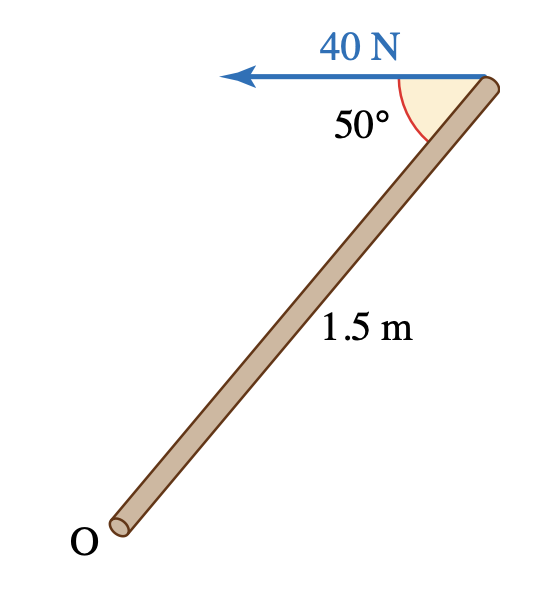
Show answer
The perpendicular distance from O to the line of action is
d=1.5\sin50^\circ.
Therefore
M=Fd=40(1.5\sin50^\circ) =\boxed{46.0\,\mathrm{N\,m}}.
Equivalently, resolve the force perpendicular to the rod:
M=(40\sin50^\circ)(1.5)=46.0\,\mathrm{N\,m}.Example 2.5
A sign is attached to a light rod of length 1\,\mathrm m which is freely hinged to the wall and supported in a vertical plane by a light string, as in Figure 2.33. The sign is assumed to be a uniform rectangle of mass 10\,\mathrm{kg}. The angle of the string to the horizontal is 25^\circ.
(i) Find the tension in the string.
(ii) Find the magnitude and direction of the reaction force of the hinge on the sign.
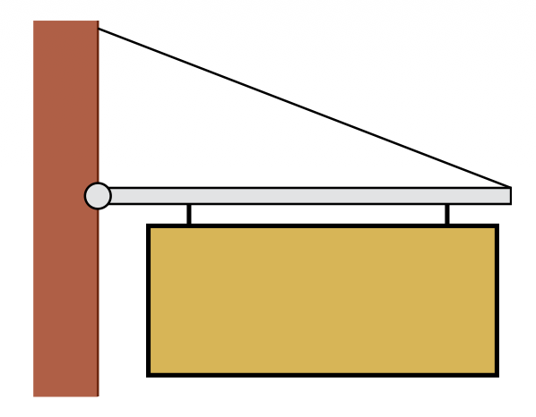
Show answer
Let the horizontal and vertical components of the hinge reaction be R_H and R_V. The sign’s weight 10g acts at the midpoint of the rod.
(i) Taking moments about O:
T\sin25^\circ(1)-10g(0.5)=0.
Thus
T=\frac{5g}{\sin25^\circ}=\boxed{118\,\mathrm N}.
(ii) Horizontal equilibrium gives
R_H=T\cos25^\circ=107\,\mathrm N.
Vertical equilibrium gives
R_V+T\sin25^\circ-10g=0 \quad\Longrightarrow\quad R_V=50\,\mathrm N.
Hence
R=\sqrt{107^2+50^2}=\boxed{118\,\mathrm N},
\tan\theta=\frac{50}{107} \quad\Longrightarrow\quad \boxed{\theta=25.0^\circ\text{ above the horizontal}}.Example 2.6
A uniform ladder is standing on rough ground and leaning against a smooth wall at an angle of 60^\circ to the ground. The ladder has length 4\,\mathrm m and mass 15\,\mathrm{kg}. Find the normal reaction forces at the wall and ground and the friction force at the ground.
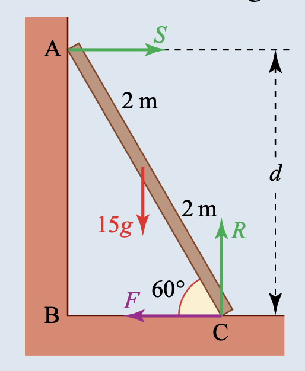
Show answer
Let S be the reaction at the smooth wall, R the vertical reaction at the ground and F the frictional force.
Horizontal equilibrium:
S-F=0.
Vertical equilibrium:
R-15g=0 \quad\Longrightarrow\quad R=\boxed{150\,\mathrm N}.
Taking moments about the foot of the ladder, the ladder’s weight acts 2\cos60^\circ from the foot and the wall reaction has moment arm 4\sin60^\circ:
15g(2\cos60^\circ)-S(4\sin60^\circ)=0.
Therefore
S=\frac{150}{4\sin60^\circ}=\boxed{43.3\,\mathrm N}.
From horizontal equilibrium,
F=S=\boxed{43.3\,\mathrm N}.3. 教材中标注 Cambridge International 的题目
本节收录 Further Mechanics Chapter 2 Exercise 2B 中明确标注 Cambridge International 来源的题目。题目保留英文，答案按教材 Example 风格展开。
Exercise 2B Question 12
A uniform rod AB of weight 16\,\mathrm N is freely hinged at A to a fixed point. A force of magnitude 4\,\mathrm N acting perpendicular to the rod is applied at B (see diagram).
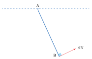
Given that the rod is in equilibrium
(i) calculate the angle the rod makes with the horizontal
(ii) find the magnitude and direction of the force exerted on the rod at A.
Show answer
(i) Let the angle between the rod and the horizontal be \theta. Taking moments about A, the 4\,\mathrm N force has moment 4AB, while the weight has moment 16(AB/2)\cos\theta in the opposite direction.
4AB-16\left(\frac{AB}{2}\right)\cos\theta=0.
Thus
4=8\cos\theta \quad\Longrightarrow\quad \cos\theta=\frac12 \quad\Longrightarrow\quad \boxed{\theta=60^\circ}.
(ii) Resolve the 4\,\mathrm N force into horizontal and vertical components using \theta=60^\circ:
4\sin60^\circ=2\sqrt3\,\mathrm N, \qquad 4\cos60^\circ=2\,\mathrm N.
Equilibrium of forces gives the hinge reaction components
R_H=2\sqrt3\,\mathrm N, \qquad R_V=16-2=14\,\mathrm N.
Therefore
R=\sqrt{(2\sqrt3)^2+14^2}=\boxed{14.4\,\mathrm N},
and
\tan\phi=\frac{14}{2\sqrt3} \quad\Longrightarrow\quad \boxed{\phi=76.1^\circ\text{ above the horizontal}}.4. Paper 3 真题题库
以下题目从本地 9231 Paper 3 Question Papers 中筛选，覆盖 moments、rigid rods、laminae、friction、limiting equilibrium 和 tipping。答案按 Mark Scheme 的得分逻辑分步写出。
2021 May/June · 9231/31 and 9231/32 · Question 4
A uniform solid circular cone has vertical height kh and radius r. A uniform solid cylinder has height h and radius r. The base of the cone is joined to one of the circular faces of the cylinder so that the axes of symmetry of the two solids coincide (see diagram). The cone and the cylinder are made of the same material.
(a) Show that the distance of the centre of mass of the combined solid from the base of the cylinder is
\frac{h(k^2+4k+6)}{4(3+k)}.
The solid is placed on a plane that is inclined to the horizontal at an angle i. The base of the cylinder is in contact with the plane. The plane is sufficiently rough to prevent sliding. It is given that 3h=2r and that the solid is on the point of toppling when \tan i=4/3.
(b) Find the value of k.
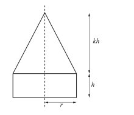
Show answer
(a) The cone has volume \frac13\pi r^2kh and centre of mass h+kh/4 above the cylinder base. The cylinder has volume \pi r^2h and centre of mass h/2 above the base. Therefore
\pi r^2h\left(\frac{k}{3}+1\right)x =\frac13\pi r^2kh\left(h+\frac{kh}{4}\right) +\pi r^2h\left(\frac h2\right).
Hence
\boxed{x=\frac{h(k^2+4k+6)}{4(3+k)}}.
(b) At the point of toppling,
\tan i=\frac r x.
Using r=3h/2 and \tan i=4/3:
\frac43=\frac{3h/2}{h(k^2+4k+6)/(4(3+k))}.
After simplification,
2k^2-k-15=0 \quad\Longrightarrow\quad (2k+5)(k-3)=0.
Since k>0,
\boxed{k=3}.2021 October/November · 9231/31 · Question 4
A uniform lamina AECF is formed by removing two identical triangles BCE and CDF from a square lamina ABCD. The square has side 3a and EB=DF=h (see diagram).
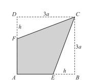
The lamina AECF is placed vertically on its edge AE on a horizontal plane.
(a) Find the distances of the centre of mass of the lamina from AD and from AB, giving your answers in terms of a and h.
(b) Find, in terms of a, the set of values of h for which the lamina remains in equilibrium.
Show answer
The square has area 9a^2 and centre of mass at distance 3a/2 from AD. Each removed triangle has area 3ah/2.
Let x be the distance of the remaining centre of mass from AD. Taking moments about AD:
(9a^2-3ah)x =9a^2\left(\frac{3a}{2}\right) -\frac{3ah}{2}\,a -\frac{3ah}{2}\left(3a-\frac h3\right).
After simplification,
x=\frac{27a^2-12ah+h^2}{6(3a-h)} =\boxed{\frac{9a-h}{6}}.
By symmetry, the distance from AB is also
\boxed{\frac{9a-h}{6}}.
(b) The vertical projection of the centre of mass must lie within the supporting edge AE. Its distance from AD therefore satisfies
x\le AE=3a-h.
Hence
\frac{9a-h}{6}\le3a-h \Longrightarrow 9a-h\le18a-6h \Longrightarrow 5h\le9a.
Therefore
\boxed{0\le h\le\frac95a}.2021 October/November · 9231/32 · Question 4
An object is formed by removing a solid cylinder, of height ka and radius \frac12a, from a uniform solid hemisphere of radius a. The axes of symmetry of the hemisphere and the cylinder coincide and one circular face of the cylinder coincides with the plane face of the hemisphere. AB is a diameter of the circular face of the hemisphere (see diagram).
(a) Show that the distance of the centre of mass of the object from AB is
\frac{3a(2-k^2)}{2(8-3k)}.
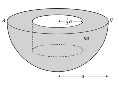
When the object is freely suspended from the point A, the line AB makes an angle i with the downward vertical, where \tan i=\frac7{18}.
(b) Find the possible values of k.
Show answer
(a) The hemisphere has volume \frac23\pi a^3 and centre of mass \frac{3a}{8} from AB. The removed cylinder has volume \frac14\pi ka^3 and centre of mass \frac12ka from AB.
Therefore, if X is the required distance,
X\left(\frac23\pi a^3-\frac14\pi ka^3\right) =\frac23\pi a^3\left(\frac{3a}{8}\right) -\frac14\pi ka^3\left(\frac{ka}{2}\right).
Hence
\boxed{X=\frac{3a(2-k^2)}{2(8-3k)}}.
(b) On suspension, the line through A and the centre of mass gives
\tan i=\frac{X}{a}.
Thus
\frac{3(2-k^2)}{2(8-3k)}=\frac7{18},
27k^2-21k+2=0 \quad\Longrightarrow\quad (3k-2)(9k-1)=0.
Therefore
\boxed{k=\frac23\ \text{or}\ k=\frac19}.2022 May/June · 9231/31 and 9231/32 · Question 4
An object is composed of a hemispherical shell of radius 2a attached to a closed hollow circular cylinder of height h and base radius a. The hemispherical shell and the hollow cylinder are made of the same uniform material. The axes of symmetry of the shell and the cylinder coincide. AB is a diameter of the lower end of the cylinder (see diagram).
(a) Find, in terms of a and h, an expression for the distance of the centre of mass of the object from AB.
The object is placed on a rough plane which is inclined to the horizontal at an angle i, where \tan i=2/3. The object is in equilibrium with AB in contact with the plane and lying along a line of greatest slope of the plane.
(b) Find the set of possible values of h, in terms of a.
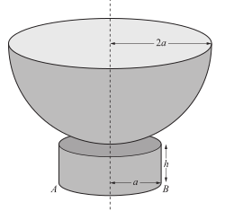
Show answer
(a) The volume of the hollow cylinder is 2\pi ah+2\pi a^2, and its centre of mass is h/2 from AB. The hemispherical shell has volume 2\pi(2a)^2 and its centre of mass is h+a from AB.
Taking moments about AB:
x(2\pi ah+2\pi a^2+8\pi a^2) =8\pi a^2(h+a)+(2\pi ah+2\pi a^2)\frac h2.
Thus
\boxed{x=\frac{h^2+9ah+8a^2}{2(h+5a)}}.
(b) At equilibrium, the vertical projection of the centre of mass lies over the contact diameter. Hence
x\le\frac{a}{\tan i}=\frac32a.
Substituting the expression for x:
\frac{h^2+9ah+8a^2}{2(h+5a)}\le\frac32a.
This gives
(h-a)(h+7a)\le0.
Since h\ge0,
\boxed{0\le h\le a}.2022 May/June · 9231/33 · Question 7
A uniform cylinder with a rough surface and of radius a is fixed with its axis horizontal. Two identical uniform rods AB and BC, each of weight W and length 2a, are rigidly joined at B with AB perpendicular to BC. The rods rest on the cylinder in a vertical plane perpendicular to the axis of the cylinder with AB at an angle \theta to the horizontal. D and E are the midpoints of AB and BC respectively and also the points of contact of the rods with the cylinder (see diagram). The rods are about to slip in a clockwise direction. The coefficient of friction between each rod and the cylinder is \mu.
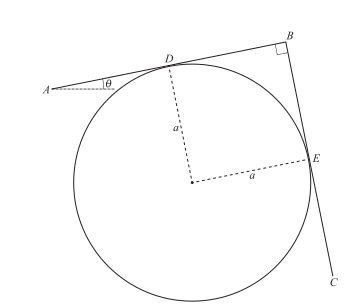
The rods are about to slip clockwise. The coefficient of friction between each rod and the cylinder is \mu. The normal reactions between AB and the cylinder and between BC and the cylinder are R and N respectively.
(a) Find the ratio R:N in terms of \mu.
(b) Given that \mu=1/3, find \tan i.
Show answer
Let the frictional forces at D and E be \mu R and \mu N respectively. Resolving the forces and taking moments about suitable points gives the mark-scheme relations
N-R=\frac12\bigl((1-\mu)N-(1+\mu)R\bigr).
Rearranging:
N\left(\frac12+\frac\mu2\right) =R\left(\frac12-\frac\mu2\right).
Therefore
\boxed{R:N=1+\mu:1-\mu}.
(b) Resolving in directions parallel and perpendicular to AB, then dividing the equations, gives
\tan i=\frac{N-\mu R}{\mu N+R}.
For \mu=1/3,
R:N=\frac43:\frac23=2:1 \quad\Longrightarrow\quad R=2N.
Hence
\tan i=\frac{N-\frac13(2N)}{\frac13N+2N} =\frac{N/3}{7N/3} =\boxed{\frac17}.2022 October/November · 9231/32 · Question 2
A uniform lamina is in the form of a triangle ABC in which angle B is a right angle, AB=9a and BC=6a. The point D is on BC such that BD=x (see diagram). The region ABD is removed from the lamina. The resulting shape ADC is placed with the edge DC on a horizontal surface and the plane ADC is vertical.
Find the set of values of x, in terms of a, for which the shape is in equilibrium.
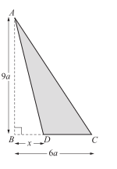
Show answer
The area of ABC is 27a^2, and its centre of mass is 2a from AB. The removed triangle ABD has area 9ax/2, and its centre of mass is x/3 from AB.
Let X be the distance of the centre of mass of ADC from AB. Taking moments about AB:
X\left(27a^2-\frac92ax\right) =27a^2(2a)-\frac92ax\left(\frac x3\right).
Hence
X=\frac{54a^3-\frac32ax^2}{27a^2-\frac92ax}.
For equilibrium, the vertical projection of the centre of mass must lie on the supporting edge DC, so X\ge x. Therefore
54a^3-\frac32ax^2 \ge x\left(27a^2-\frac92ax\right),
(x-3a)(x-6a)\ge0.
With 0\le x\le6a,
\boxed{0\le x\le3a}.2022 October/November · 9231/31 and 9231/33 · Question 3
A smooth cylinder is fixed to a rough horizontal surface with its axis of symmetry horizontal. A uniform rod AB, of length 4a and weight W, rests against the surface of the cylinder. The end A of the rod is in contact with the horizontal surface. The vertical plane containing the rod AB is perpendicular to the axis of the cylinder. The point of contact between the rod and the cylinder is C, where AC=3a. The angle between the rod and the horizontal surface is \theta where \tan\theta=3/4 (see diagram). The coefficient of friction between the rod and the horizontal surface is 6/7.
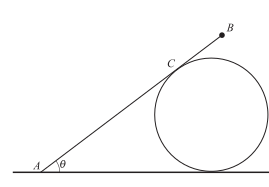
A particle of weight kW is attached to the rod at B. The rod is about to slip, and the normal reaction between the rod and cylinder is N.
(a) Show that N=\dfrac{8}{15}W(1+2k).
(b) Find the value of k.
Show answer
Let F be the friction at A and R the normal reaction at A. Since \tan i=3/4,
\sin i=\frac35,qquad \cos i=\frac45.
(a) Taking moments about A:
N(3a)=W(2a\cos i)+kW(4a\cos i).
Thus
3N=(2+4k)W\frac45 \quad\Longrightarrow\quad \boxed{N=\frac{8}{15}W(1+2k)}.
(b) At limiting equilibrium,
F=\frac67R.
Resolving horizontally and vertically:
F=N\sin i=\frac35N,
N\cos i+R=(1+k)W \quad\Longrightarrow\quad R=(1+k)W-\frac45N.
Using the result from part (a),
R=\frac{43+11k}{75}W, \qquad F=\frac{8}{25}(1+2k)W.
Now use F=6R/7:
\frac{8}{25}(1+2k) =\frac67\left(\frac{43+11k}{75}\right).
This gives
56(1+2k)=2(43+11k) \Longrightarrow 90k=30 \Longrightarrow \boxed{k=\frac13}.2023 May/June · 9231/31 and 9231/32 · Question 4
An object is formed from a solid hemisphere, of radius 2a, and a solid cylinder, of radius a and height d. The hemisphere and the cylinder are made of the same material. The cylinder is attached to the plane face of the hemisphere. The line OC forms a diameter of the base of the cylinder, where C is the centre of the plane face of the hemisphere and O is common to both circumferences (see diagram). Relative to axes through O, parallel and perpendicular to OC as shown, the centre of mass of the object is (x,y).
(a) Show that
x=\frac{32a^2+3ad}{16a+3d}
and find an expression, in terms of a and d, for y.
The object is placed on a rough plane which is inclined to the horizontal at an angle i where \sin i=1/6. The object is in equilibrium with CO horizontal, where CO lies in a vertical plane through a line of greatest slope.
(b) Find d in terms of a.
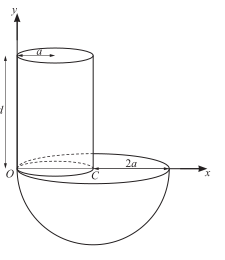
Show answer
(a) Using volume as the mass measure, the hemisphere and cylinder give
\boxed{x=\frac{32a^2+3ad}{16a+3d}}, \qquad \boxed{y=\frac{3d^2-8a^2}{2(16a+3d)}}.
(b) For equilibrium,
\sin i=\frac{2a-x}{2a}.
Substitute \sin i=1/6:
\frac16=\frac{2a-\dfrac{32a^2+3ad}{16a+3d}}{2a}.
After clearing denominators,
5(16a+3d)=3(32a+3d) \quad\Longrightarrow\quad \boxed{d=\frac83a}.2023 May/June · 9231/33 · Question 3
A uniform lamina is in the form of a triangle ABC, with AC=8a, BC=6a and angle ACB=90^\circ. The point D on AC is such that AD=3a. The point E on CB is such that CE=x (see diagram). The triangle CDE is removed from the lamina.
(a) Find, in terms of a and x, the distance of the centre of mass of the remaining object ADEB from AC.
The object ADEB is on the point of toppling about the point E when the object is in the vertical plane with its edge EB on a smooth horizontal surface.
(b) Find x in terms of a.
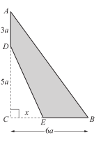
Show answer
(a) The area of ABC is 24a^2, and the area of DEC is 5ax/2. Taking moments about AC:
X\left(24a^2-\frac52ax\right) =24a^2(2a)-\frac52ax\left(\frac x3\right).
Therefore
\boxed{X=\frac{288a^2-5x^2}{3(48a-5x)}}.
(b) At the point of toppling about E, X=x:
\frac{288a^2-5x^2}{3(48a-5x)}=x.
Thus
10x^2-144ax+288a^2=0 \Longrightarrow 2(5x-12a)(x-12a)=0.
The admissible value is
\boxed{x=\frac{12}{5}a}.2023 October/November · 9231/31 and 9231/33 · Question 3
A uniform square lamina of side 2a and weight W is suspended from a light inextensible string attached to the midpoint E of the side AB. The other end of the string is attached to a fixed point P on a rough vertical wall. The vertex B of the lamina is in contact with the wall. The string EP is perpendicular to the side AB and makes an angle i with the wall (see diagram). The string and the lamina are in a vertical plane perpendicular to the wall. The coefficient of friction between the wall and the lamina is 1/2.
Given that the vertex B is about to slip up the wall, find the value of \tan i.
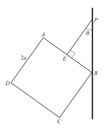
Show answer
Let T be the tension, N the normal reaction at B, and F the frictional force acting downwards. Resolving vertically and horizontally:
T\cos i=F+W, \qquad T\sin i=N.
Taking moments about B:
Ta=W a\sin i+W a\cos i.
Since the lamina is about to slip and \mu=1/2,
F=\frac12N.
Eliminating T, F and N gives
(\cos i+\sin i)\left(\cos i-\frac12\sin i\right)=1,
which simplifies to
\sin i(\cos i-3\sin i)=0.
The non-zero solution is
\boxed{\tan i=\frac13}.2023 October/November · 9231/32 · Question 3
A uniform lamina is in the form of an isosceles triangle ABC in which AC=2a and angle ABC=90^\circ. The point D on AB is such that the ratio DB:AB=1:k. The point E on CB is such that DE is parallel to AC. The triangle DBE is removed from the lamina (see diagram).
(a) Find, in terms of k, the distance of the centre of mass of the remaining lamina ADEC from the midpoint of AC.
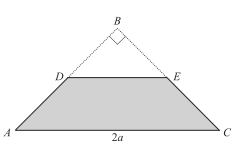
When the lamina ADEC is freely suspended from the vertex A, the edge AC makes an angle i with the downward vertical, where \tan i=\frac5{18}.
(b) Find the value of k.
Show answer
(a) Let X be the distance of the centre of mass of ADEC from the midpoint of AC. Using areas as mass measures,
\text{area}(ABC)=a^2, \qquad \text{area}(DBE)=\frac{a^2}{k^2}.
The distances of their centres of mass from AC are \frac a3 and a-\frac{2a}{3k} respectively. Hence
X\left(a^2-\frac{a^2}{k^2}\right) =a^2\left(\frac a3\right) -\frac{a^2}{k^2}\left(a-\frac{2a}{3k}\right).
After simplifying,
\boxed{X=\frac{a(k^2+k-2)}{3k(k+1)}}.
(b) On suspension,
\tan i=\frac Xa.
Therefore
\frac{k^2+k-2}{3k(k+1)}=\frac5{18},
k^2+k-12=0 \quad\Longrightarrow\quad (k+4)(k-3)=0.
Since k>1,
\boxed{k=3}.2024 May/June · 9231/33 · Question 5
A uniform lamina is in the form of a triangle OBC, with OC=18a, OB=24a and angle COB=90^\circ. The point A on OB is such that OA=x (see diagram). The triangle OAC is removed from the lamina.
(a) Find, in terms of a and x, the distance of the centre of mass of the remaining object ABC from OC.
The object ABC is suspended from C. In its equilibrium position, the side AB makes an angle i with the vertical, where \tan i=6/5.
(b) Find x in terms of a.
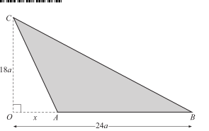
Show answer
(a) Taking moments about OC:
(216a^2-9ax)X=216a^2(8a)-9ax\left(\frac x3\right).
Hence
\boxed{X=\frac{576a^2-x^2}{72a-3x}}.
(b) In equilibrium, the vertical through the centre of mass passes through C. Using the given angle,
\tan i=\frac{18a-6a}{X}.
Substituting the expression for X and simplifying gives
x^2-30ax+144a^2=0 \quad\Longrightarrow\quad (x-6a)(x-24a)=0.
Since 0<x<24a,
\boxed{x=6a}.2024 October/November · 9231/31 and 9231/33 · Question 4
An object is formed by removing a cylinder of radius \frac23a and height kh (k<1) from a uniform solid cylinder of radius a and height h. The vertical axes of symmetry of the two cylinders coincide. The upper faces of the two cylinders are in the same plane as each other. The points A and B are the opposite ends of a diameter of the upper face of the object (see diagram).
(a) Find, in terms of h and k, the distance of the centre of mass of the object from AB.
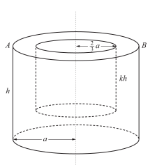
When the object is suspended from A, the angle between AB and the vertical is i, where \tan i=\frac23.
(b) Given that h=\frac83a, find the possible values of k.
Show answer
(a) The remaining volume is
\pi a^2h-\pi\left(\frac23a\right)^2kh =\pi a^2h\left(1-\frac49k\right).
Taking moments about AB,
\pi a^2h\left(1-\frac49k\right)X =\pi a^2h\left(\frac h2\right) -\pi\left(\frac23a\right)^2kh\left(\frac{kh}{2}\right).
Hence
\boxed{X=\frac{(9-4k^2)h}{2(9-4k)}}.
(b) On suspension, \tan i=X/a. Substituting h=\frac83a and \tan i=\frac23 gives
\frac{(9-4k^2)\frac83}{2(9-4k)}=\frac23,
32k^2-36k+9=0 \quad\Longrightarrow\quad (8k-3)(4k-3)=0.
Therefore
\boxed{k=\frac38\ \text{or}\ k=\frac34}.2024 October/November · 9231/32 · Question 4
The end A of a uniform rod AB of length 6a and weight W is in contact with a rough vertical wall. One end of a light inextensible string of length 3a is attached to the midpoint C of the rod. The other end of the string is attached to a point D on the wall, vertically above A. The rod is in equilibrium when the angle between the rod and the wall is \theta, where \tan\theta=2/3. A particle of weight W is attached to the point E on the rod, where the distance AE is equal to ka (3<k<6) (see diagram). The rod and the string are in a vertical plane perpendicular to the wall. The coefficient of friction between the rod and the wall is 1/3. The rod is about to slip down the wall.
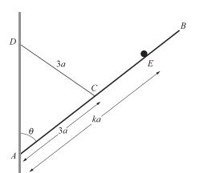
(a) Find the value of k.
Show answer
Let T be the tension in the string, F the friction at A, and R the normal reaction at A. Since \tan i=2/3,
\sin i=\frac{2}{\sqrt{13}}, \qquad \cos i=\frac{3}{\sqrt{13}}.
Resolving vertically and horizontally:
T\cos i+F=2W,
T\sin i=R.
Taking moments about A:
T\cos i(3a\sin i)+T\sin i(3a\cos i) =W(3a\sin i)+W(ka\sin i).
The rod is about to slip down, so
F=\frac13R=\frac13T\sin i.
The moment equation simplifies to
6T\sin i\cos i=(3+k)W\sin i.
Using the two force equations and eliminating T and W gives
12\cos i=(3+k)(\cos i+\sin i).
Substitute \cos i=3/\sqrt{13} and \sin i=2/\sqrt{13}:
36=5(3+k) \quad\Longrightarrow\quad \boxed{k=\frac{21}{5}}.2025 May/June · 9231/31 and 9231/32 · Question 4
An object is formed by removing a solid hemisphere, radius 2r, from a uniform solid cone, radius 3r and semi-vertical angle \theta, where \tan\theta=1/2. The axes of symmetry of the cone and the hemisphere coincide. The base of the cone and the base of the hemisphere are in the same plane as each other (see diagram).
(a) Find, in terms of r, the distance of the centre of mass of the object from its base.
The object is placed such that its circular base makes contact with a rough plane which is inclined to the horizontal at an angle \alpha. The object is on the point of toppling. The plane is sufficiently rough to prevent sliding.
(b) Find the value of \alpha.
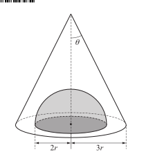
Show answer
(a) Using volume as the mass measure and subtracting the hemisphere from the cone:
y=\frac{\left(18\pi r^3\right)\left(\frac32r\right)-\left(\frac{16}{3}\pi r^3\right)\left(\frac34r\right)}{18\pi r^3-\frac{16}{3}\pi r^3} =\boxed{\frac{69}{38}r}.
(b) At the point of toppling,
\tan\alpha=\frac{3r}{y} =\frac{3r}{69r/38}=\frac{38}{23}.
Therefore
\boxed{\alpha=58.8^\circ}.2025 May/June · 9231/33 · Question 4
An object consists of a uniform lamina with a particle attached. The uniform lamina ABCEFD of mass m is formed from a rectangle ABCD and an isosceles triangle CEF, where F is the midpoint of CD. The rectangle has sides AB=2a and AD=a. The triangle CEF has base a and height 2a. The particle of mass km is attached to the lamina at E. The object rests in a vertical plane with its edge AD on horizontal ground (see diagram).
Given that the object is on the point of toppling in its vertical plane about the vertex D, find the value of k.
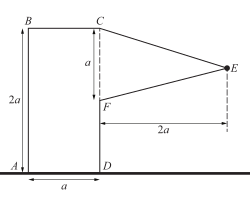
Show answer
The mass ratios of the rectangle, triangle and particle are 2:1:3k. Taking moments about D:
2\left(\frac a2\right)=1\left(\frac{2a}{3}\right)+3k(2a).
Therefore
1=\frac23+6k \quad\Longrightarrow\quad \boxed{k=\frac1{18}}.2025 October/November · 9231/31 and 9231/33 · Question 5
A uniform lamina OABCD consists of a rectangle OACD and a triangle ABC. The length of OA is ka, the length of OD is 2a, the height of triangle ABC is h and angle CAB=45^\circ (see diagram). Relative to axes through O, parallel and perpendicular to OA as shown, the centre of mass of triangle ABC is (x,y).
(a) Show that x=\dfrac13(3ka+h), and find an expression for y.
The lamina OABCD is placed vertically on its edge OA on a horizontal plane.
(b) Find, in terms of a and k, the set of values of h for which the lamina is in equilibrium.
It is now given that k=3 and that the lamina is on the point of toppling.
(c) Find, in terms of a, the coordinates of the centre of mass of the triangle ABC.
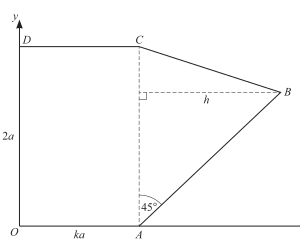
Show answer
(a) Using the three vertices of the triangle,
x=\frac13(ka+(ka+h)+ka)=\boxed{\frac13(3ka+h)},
and
y=\frac13(0+h+2a)=\boxed{\frac13(2a+h)}.
(b) Taking moments about the horizontal axis through O gives
\left(2ka^2+ah\right)x =2ka^2\left(\frac{ka}{2}\right)+ah\left(ka+\frac h3\right).
For equilibrium, x\le ka. Substitution and simplification give
0\le h\le\boxed{3ka}.
(c) With k=3 and at toppling, h=3ka=a. Hence
\boxed{(x,y)=\left(\frac{4a}{3},a\right)}.2025 October/November · 9231/32 · Question 3
A uniform lamina OABCD is in the form of a rectangle, OBCD, joined along the edge OB to a quarter circle OAB. The length of DO is ka and the length of OB is a. The lamina rests in a vertical plane with its edge CB on a horizontal surface (see diagram).
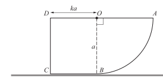
(a) Find, in terms of k, a and \pi, an expression for the distance of the centre of mass above the horizontal surface.
[You may use without proof the result for the centre of mass of a circular sector in the list of formulae (MF19).]
The lamina is then on the point of toppling about B.
(b) Find the value of k.
Show answer
The rectangle has area ka^2 and its centre is at height ka/2. The quarter-circle sector has area \pi a^2/4.
The centre of mass of the quarter-circle sector is at vertical distance
\left(\frac{2a\cos(\pi/4)}{3(\pi/4)}\right)\sin\frac\pi4 =\frac{4a}{3\pi}
above OA. Hence its height above CB is a-4a/(3\pi).
(a) If the centre of mass is at height y above CB, taking moments about OB gives
ka^2\left(\frac{ka}{2}\right) +\frac{\pi a^2}{4}\left(a-\frac{4a}{3\pi}\right) =\left(ka^2+\frac{\pi a^2}{4}\right)y.
After simplification,
\boxed{y=\frac{6k+3\pi-4}{3(4k+\pi)}a}.
(b) At the point of toppling about B, the vertical line through the centre of mass passes through B. Taking moments about OB gives
ka^2\left(\frac{ka}{2}\right) =\frac{\pi a^2}{4}\left(\frac{4a}{3\pi}\right).
Therefore
\frac{k^2a^3}{2}=\frac{a^3}{3} \quad\Longrightarrow\quad k^2=\frac23.
Since k>0,
\boxed{k=\sqrt{\frac23}=0.816}.5. 本章检查清单
- Moment 的 distance 必须是 perpendicular distance，不是任意几何距离；
- 取 moments 前先明确正方向，并保持 clockwise、anticlockwise 符号一致；
- 对刚体平衡，只有 \sum F=0 还不够，还必须有 \sum M=0；
- uniform rod、uniform plank 和 uniform lamina 的 weight 作用在 centre of mass；
- smooth contact 没有 friction，rough contact 才能使用 F=\mu R；
- about to slip 时使用等号 F=\mu R；
- point of tipping 时，centre of mass 的竖直投影通过支撑边缘；
- 选取矩点时，优先选择能消去一个或多个未知 reaction 的点。
6. 常用解题技巧
6.1 先画完整受力图
把刚体单独画出，并标明：
- 每个力的大小、方向和作用点；
- weight 的作用线；
- normal reaction；
- friction 的方向；
- string tension、hinge reaction 或 support reaction。
均匀 rod、beam 或 lamina 的 weight 作用在 centre of mass。若接触面 smooth，只能画 normal reaction；若接触面 rough，才可以画 friction。
6.2 先判断使用 particle 还是 rigid body model
若题目只研究平移，可以把物体近似为 particle；若力的作用点、物体长度或转动效果重要，必须使用 rigid body model，并列力矩方程。
刚体平衡需要同时满足
\sum F_x=0, \qquad \sum F_y=0, \qquad \sum M_O=0.
只写水平和竖直方向的合力为零，不能保证刚体没有转动。
6.3 力矩一定使用垂直距离
力 F 关于点 O 的力矩为
M=Fd,
其中 d 是 O 到 force line of action 的 perpendicular distance，不是力的作用点到 O 的任意距离。
若力作用点距 O 的距离为 a，力与 rod 的夹角为 \alpha，则
M=Fa\sin\alpha.
若力的作用线通过取矩点，直接写该力的 moment 为零，即使力本身不为零。
6.4 统一力矩正负号
建议规定 anticlockwise 为正、clockwise 为负，然后在草稿上逐个标记每个力的转动方向。平衡时写
\text{anticlockwise moments} =\text{clockwise moments}
或统一写成带符号的
\sum M_O=0.
同一道题不要一部分使用“顺时针为正”，另一部分又使用“逆时针为正”。最后检查每个 moment 的量纲应为 \mathrm{N\,m}。
6.5 选择最有利的取矩点
取 moments 可以关于任意一点。优先选取：
- hinge 或 contact point；
- 一个或多个未知 reaction 的作用线经过的点；
- 几何上容易确定垂直距离的端点。
这样可以直接消去相应未知力的 moment，通常只需一个力矩方程就能求出关键未知量。若取矩点不在刚体上，也可以使用，但必须准确计算每条 force line 的 perpendicular distance。
6.6 先列合力方程，再列力矩方程
常见流程是：
- 画受力图并选择坐标轴；
- 写 \sum F_x=0；
- 写 \sum F_y=0；
- 选择方便的点写 \sum M=0；
- 解未知 reaction、friction、tension 或角度；
- 检查所有方程和力的方向。
对于只包含竖直力和水平力的题，水平、竖直方程可能直接给出 reaction；力矩方程则负责确定作用位置或角度。
6.7 Couples 的处理
一对大小相等、方向相反、作用线不同的平行力的 resultant force 为零，但 couple moment 不为零：
M=Fd,
其中 d 是两条作用线之间的 perpendicular distance。
Couple 的 moment 与取矩点无关。若题目同时有其他外力，先检查 couple 是否已经抵消合力，再把 couple moment 作为一个独立的顺时针或逆时针 moment 加入力矩方程。
6.8 Smooth contact 与 rough contact
接触类型决定未知力的方向：
- smooth contact：只有 normal reaction，方向垂直接触面；
- rough contact：有 normal reaction 和 friction，friction 沿接触面；
- string：tension 沿 string，方向指向 string 的另一端；
- hinge：通常需要水平和竖直两个 reaction 分量。
不要因为物体“可能向右滑”就预先把 friction 方向写死；先假设一个方向，若解出负值，说明真实方向相反。
6.9 Limiting equilibrium 与 friction
一般静止接触只满足
F\leqslant\mu R.
题目出现 “about to slip”“on the point of sliding” 或 “limiting equilibrium” 时，才使用
F=\mu R.
常见流程是先用力矩方程和合力方程求 F、R 或角度，最后代入 F=\mu R。若题目要求证明物体仍保持平衡，则应证明所得 friction 不超过 \mu R，不能直接使用等号。
6.10 梯子、杆和梁题
对 rod、ladder 或 beam：
- 标出重力作用在中点或题目给出的 centre of mass；
- 将接触力分解成 normal reaction 和 friction；
- 以接触点或铰链为取矩点，消去该点的 reaction；
- 用力矩方程求角度或临界条件；
- 用水平、竖直平衡方程求剩余 reaction。
若 rod 与水平线夹角为 \theta，长度方向的距离要乘 \cos\theta 或 \sin\theta 才能得到水平、竖直投影；不能把 rod 的实际长度直接当作力矩臂。
6.11 Centre of mass 与 tipping
物体保持平衡时，centre of mass 的竖直投影必须落在 supporting region 内。到达 tipping point 时，投影经过支撑边缘。
临界 tipping 的解题方法通常是关于支撑边缘取 moments，因为边缘处的 reaction moment 为零。此时不要继续假设另一侧有正的 support reaction；临界点处该侧 reaction 已降为零。
6.12 多个物体或 lamina 的合并
若系统由多个质量 m_i 的部分组成，centre of mass 坐标为
\bar x=\frac{\sum m_ix_i}{\sum m_i}, \qquad \bar y=\frac{\sum m_iy_i}{\sum m_i}.
先把每个部分的质量和质心坐标列成表格，再求加权平均。若使用面积代替质量，必须说明 lamina 密度均匀；若有孔洞，可把孔洞视为负质量或负面积。
6.13 常见失分点与答题结构
- 没有画出完整受力图；
- 把任意距离当作 moment arm；
- 忘记均匀物体的 weight 作用在 centre of mass；
- smooth contact 错误加入 friction；
- 未达到 limiting equilibrium 就使用 F=\mu R；
- 取矩时顺、逆时针符号混乱；
- 只满足 \sum F=0，没有检查 \sum M=0；
- tipping 时仍保留错误方向的 support reaction；
- 对 rod 的长度投影和 moment arm 没有乘正确的三角函数。
推荐按“画受力图 → 规定正方向 → 选择取矩点 → 列水平、竖直和力矩方程 → 使用接触或临界条件 → 检查 reaction、friction 和几何意义”的顺序作答。